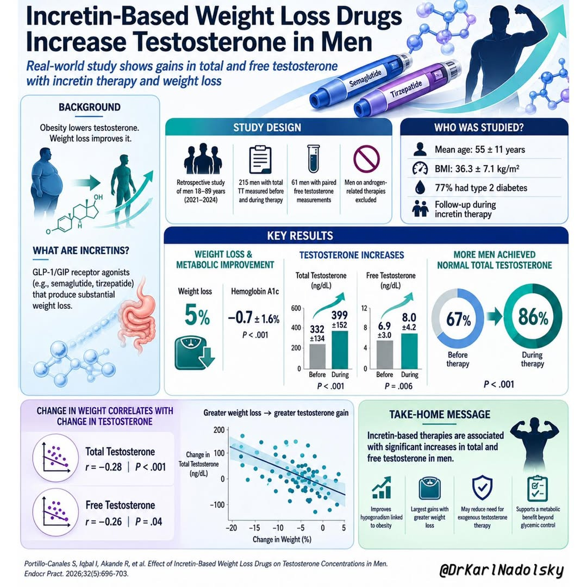

Unlike TRT, drugs that target glp1 treat the most common root cause of low testosterone in middle age men: excess visceral fat.
#glp1HD #testosteroneHD #trtHD #visceralfatHD
Obesity can cause low testosterone in men, especially abdominal obesity. While many people think of testosterone therapy as the solution, addressing the underlying cause should be the priority.
In this real-world study of men with obesity, treatment with incretin-based medications (GLP-1) was associated with modest weight loss, improved blood sugar control, and significant increases in both total and free #testosterone levels. Men who lost the most weight experienced the largest improvements in testosterone, and the percentage of men with testosterone levels in the normal range increased from 67% to 86%.
These findings add to growing evidence that obesity-related low testosterone can often improve with meaningful weight loss. For some men, treating the root cause may reduce or delay the need for testosterone replacement therapy.
It’s important to remember that not all low testosterone is caused by obesity, and comprehensive evaluation to diagnose and treat the cause is critical, with many requiring #TRT. But this study highlights an important principle: improving metabolic health can improve hormonal health, too.
Endocr Pract. 2026;32(5):696-703.
PMID: 41544705.
#hormones #GLP1 #Tirzepatide #Semaglutide #MensHealth #Testosterone #Hypogonadism #Endocrinology #WeightLoss #MetabolicHealth
